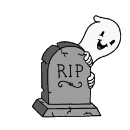

AS REPORTED IN THE DAILY BEYOND · OBITUARIES
— requiescat in pace, eventually —
Everything dies. Most things just haven't been told yet. Pick a patient below — or name your own — and an open-weight AI will deliver its eulogy now, while it can still hear it. Día de los Muertos rules: you build the altar early.
